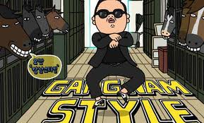
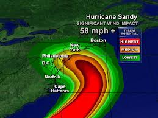
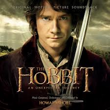

This letter was written on December 12, 2012 at 8:34 a.m. I just wanted to see how things are in the future assuming we I survived that long seeing as the worlds gunna end and all. So what are your doing with your life? Stock? Aspirations of government position? Blacksmith? Or maybe even Marines I'm not sure what to do yet so I hope you are. However I do expect you to own a Colt M1911 and a license to carry it, have been to a Paul McCartney concert(if you've had the opportunity) and gotten a six pack, c'mon me make it happen. I also wondered if you stay in Michigan? Did you move to Arizona with Eppe like I expected or stay here? Also whats your job, the closest I've gotten to a job is applying for Barnes and Noble right now, how'd that interview go by the way? Well that's pretty much all my questions I hope I had a good few years till you read this.
Sincerely,You
  